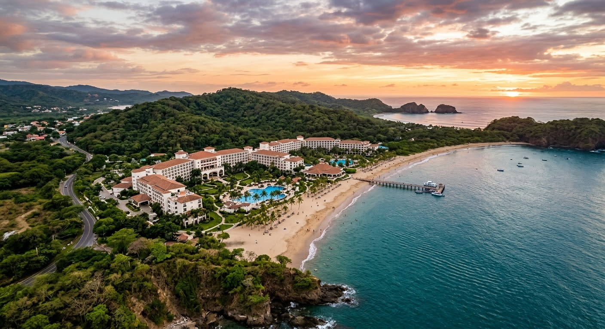

Disfrute de zonas de recreación
Contamos con espacios recreativos ideales para compartir, entre ellos:
- Voleibol de playa
- Senderos para caminatas
- Área de juegos para los más pequeños
- Gimnasio totalmente equipado
- Campo de mini golf

Descubre el paraíso en medio de la naturaleza. Nos ubicamos a las orillas de la playa Manuel Antonio, por lo que estamos cerca de una gran cantidad de actividades al aire libre, así como dentro de nuestro hotel. Algunas de las actividades incluyen senderismo, kayak, y snorkel, por lo que vas a poder disfrutar de la fauna y flora local. Vas a poder deleitarte también de nuestra área de piscina, masajes, entre otros.
Contamos con espacios recreativos ideales para compartir, entre ellos:

Ponemos a disposición una amplia selección de platillos que los diversos restaurantes ofrecen. Tenemos opciones
para todos los gustos esto gracias a nuestra alta calidad de chefs y a la frescura de los ingredientes que
Mini golf
área de juegos para los más pequeños

Nuestra piscina es una de las principales atracciones de nuestro hotel y además es una de las más grandes del área
de Manuel Antonio. Es un buen punto de socialización entre huespedes, así que dese un chapuzón de uno de nuestros
puntos de relajación más importantes y disfrute de un día soleado en la piscina.

Incluimos servicios de spa y masajes con personal altamente calificado para brindarle una experiencia de relajación
y bienestar inolvidable. Todo dentro de un entorno sereno y acogedor, pensado para desconectar del estrés diario.